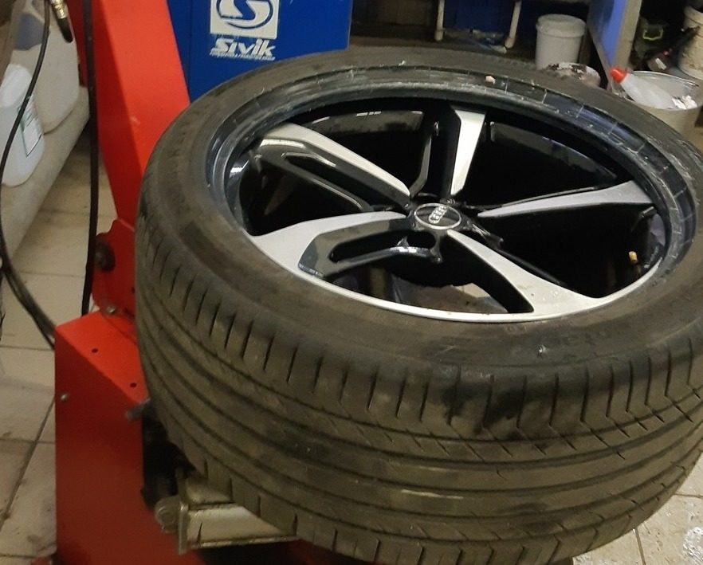

СЕРВИСШИН / УСЛУГИ И ЦЕНЫХороший сервис.
Хороший сервис.
Понятный прайс.
Выберите нужную работу. Мы поможем уточнить детали
и согласовать время в удобном центре.
01 / СЕЗОННАЯ СМЕНА КОЛЁСНовый сезон.
Новый сезон.
Готовый комплект.
Выберите вариант и размер колёс,
чтобы увидеть стоимость по прайсу.
Что входит
- Снятие и установка колёс
- Шиномонтаж
- Балансировка и грузики
- Мойка колёс
СТОИМОСТЬ ПО ПРАЙСУ
2 900 ₽
Шины без дисков · R13–R15
Уточнить и записатьсяФинальную стоимость и состав работ подтвердите по телефону.02 / ОТДЕЛЬНЫЕ РАБОТЫОт прокола
От прокола
до ремонта диска.

| Услуга | Тип работы / колёс | Цена |
|---|---|---|
| Шиномонтаж | R13–R22 | от 250 ₽ |
| Шиномонтаж | Низкий профиль | от 300 ₽ |
| Шиномонтаж | Мопеды и мотоциклы | от 400 ₽ |
| Шиномонтаж | Газель | 340 ₽ |
| Балансировка | R13–R24 | от 250 ₽ |
| Балансировка | Мотоциклы | от 400 ₽ |
| Ремонт шин | Прокол | от 350 ₽ |
| Ремонт шин | Боковой порез | от 600 ₽ |
| Ремонт дисков | Стальной диск | от 500 ₽ |
| Ремонт дисков | Литой диск | от 2 000 ₽ |
Цены перенесены с сервисшин.рф 11 октября 2026 года. Стоимость отдельных работ и возможность ремонта уточняются в центре.
03 / ПЕРЕД ВИЗИТОМКоротко
Коротко
о важном.
Как записаться?
Позвоните в выбранный центр. Назовите размер колёс и нужную услугу, затем согласуйте дату и время.
Как узнать размер колеса?
Посмотрите маркировку на боковине шины. Например, в обозначении 205/55 R16 число после R — посадочный диаметр диска в дюймах.
Можно оставить шины на хранение?
Да. Хранение комплекта из четырёх шин на 6 месяцев стоит 2 700 ₽ без дисков и 3 100 ₽ с дисками. Подробности — на странице «Хранение шин».
СЛЕДУЮЩИЙ ПОВОРОТ — К НАМПора заняться
Пора заняться
колёсами?
Выберите удобный центр.
Обсудим работы и время по телефону.